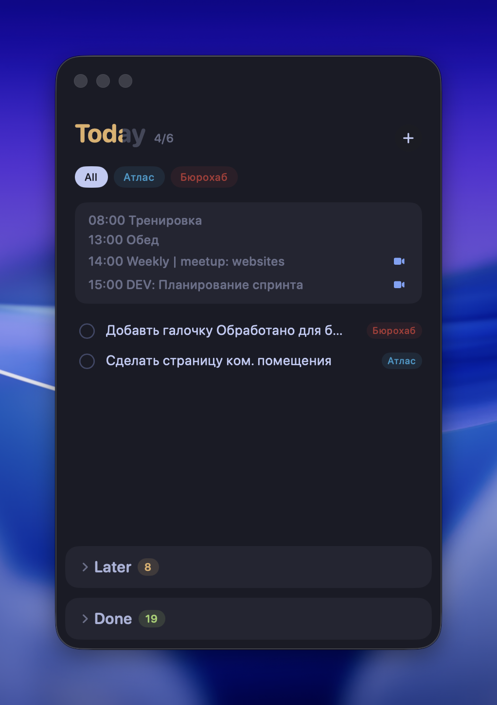
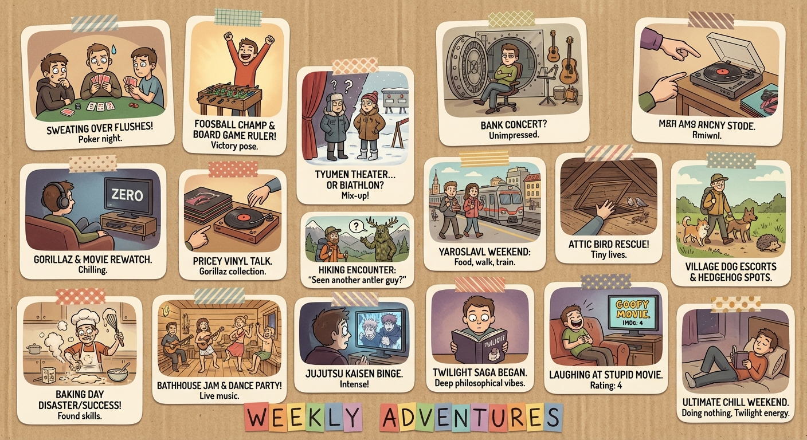
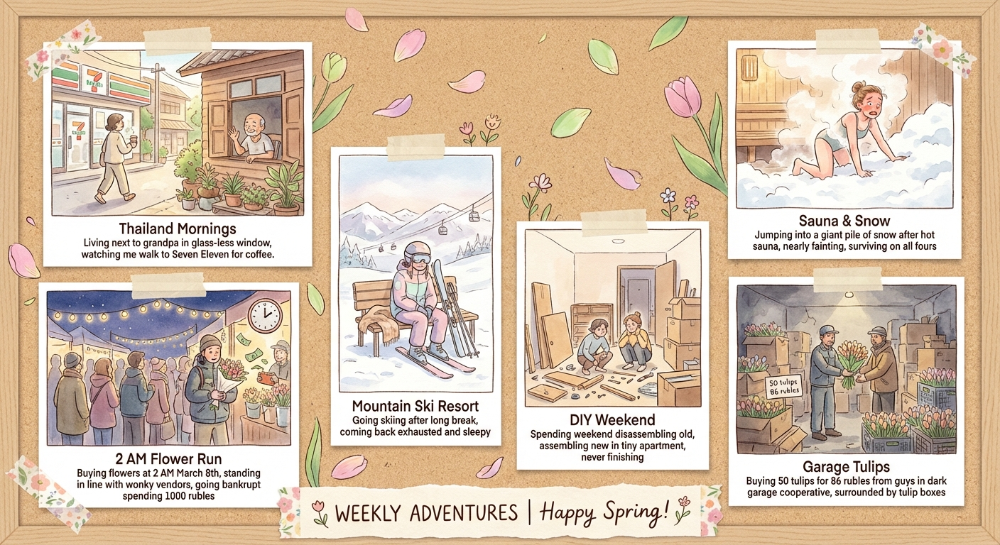
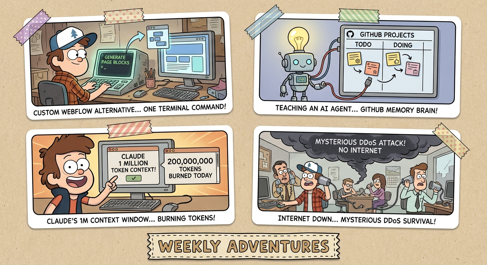
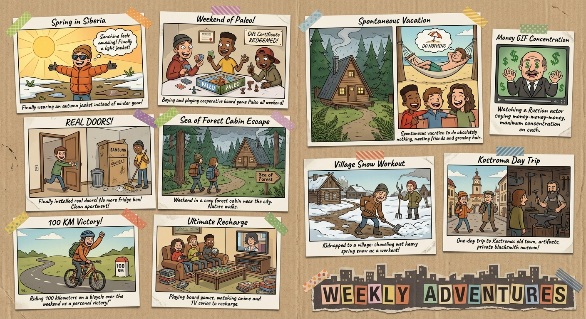

Бюро Сучкова — 2026
Практический курс: от философии до вайб-кодинга
Мой опыт с AI
AI как второй мозг
Терминал
GitHub
Claude Code — живое демо
Better-T-Stack
Кейсы вайб-кодинга
Что использую, что работает, что нет
Быстрые запросы к AI прямо с клавиатуры. Простой чат, перевод, генерация — без переключения контекста
Основной рабочий инструмент. Пишет, рефакторит, деплоит — как второй разработчик в терминале
Транскрибация встреч. Записывает, расшифровывает, делает саммари — автоматически
IDE для кода. Почти не использую — Claude Code закрывает 90% задач прямо в терминале
Главный инсайт: AI снимает вопрос «как сделать?» — но не снимает вопрос «а нужно ли это делать?». Думать головой придётся всё равно. И это хорошо.
Чем больше контекста — тем умнее
Два подхода — оба работают. Главное — дать AI контекст.
Подход Саши (CEO)
Мой подход (CTO)
Чем дольше работаешь — тем умнее становится. Claude учится на каждой сессии.
При каждом запуске Claude автоматически загружает всё, что нужно для работы:
Файл-инструкция в корне проекта. Описывает стек, команды запуска, правила — Claude читает его первым
Файлы в ~/.claude/projects/ — кто вы, ваши предпочтения, реестр проектов. Накапливается сама
Claude видит все файлы в папке. Читает, ищет, понимает структуру — не нужно копипастить
Подключения к внешним сервисам: календарь, Huly, Telegram, DevTools
Преднастроенные способности: код-ревью, SEO, фронтенд-дизайн, Nuxt-эксперт
--channels telegram — Claude слушает сообщения и может отвечать из терминала
Один файл в корне проекта — и Claude знает всё, что нужно для работы с ним.
У каждого моего проекта есть CLAUDE.md. Claude сам предлагает обновлять его, когда узнаёт что-то новое.
MCP (Model Context Protocol) — открытый стандарт. Claude подключается к внешним сервисам как к розеткам: один протокол, сотни интеграций.
Суть: MCP — открытый стандарт. Любой сервис может создать коннектор. Уже есть сотни: Slack, Jira, Notion, базы данных, API — что угодно. Подключил — Claude умеет с ним работать.
Текстовый способ управлять компьютером
Терминал — текстовый способ управлять компьютером.
Вместо кликов по папкам — пишете команды. Как адресная строка в проводнике, но умеет гораздо больше.
Хранилище версий вашего кода
Разработка без разработчиков
Вы описываете задачу текстом — Claude пишет код, создаёт файлы, запускает проект.
Видит весь проект, понимает структуру, находит ошибки
От одной строки до целого приложения
Установка зависимостей, сервер, деплой
Знает проект, стиль кода, предыдущие решения
Одна команда. Готово.
Важно: Git обязателен. После установки — перезапустить терминал.
Сейчас я открою терминал и покажу, как Claude Code изменит эту презентацию прямо на ваших глазах.
Не хотите терминал? Десктоп-приложение Claude умеет почти всё то же самое.
Указываете папку проекта — Claude видит все файлы, как в Code. Читает, анализирует, предлагает изменения
Те же интеграции: календарь, трекер, Telegram. Настраиваются в приложении
Создаёт интерактивные превью прямо в чате: графики, дашборды, прототипы
| Code | App | |
|---|---|---|
| Интерфейс | Терминал | Окно с чатом |
| Запуск команд | Сам запускает | Предлагает |
| Работа с файлами | Полная | Полная |
| Память / MCP | Да | Да |
| Для кого | Разработчики | Все |
| macOS | ☰ Windows | |
|---|---|---|
| Терминал | Terminal / Ghostty / Warp | Windows Terminal + PowerShell |
| Зависимости | Ничего не нужно | Git for Windows |
| Установка | curl ... | bash | irm ... | iex |
| Вставка картинок | Cmd + V | Alt + V не Ctrl! |
| После установки | Работает сразу | Перезапустить терминал |
Терминальные AI-кодеры — это целая категория. Claude Code лидирует, но конкуренты подтягиваются.
Anthropic. Самый продвинутый: память, MCP, скиллы, каналы. Мой основной
Open-source. Работает с любой моделью: Claude, GPT, Gemini, локальные. Бесплатный
OpenAI. Свежий, работает на GPT-4.1. Сильный в рефакторинге, sandbox-режим
Google. 1M контекст, бесплатен на Gemini Pro. Хорош для анализа больших кодбаз
Совет: начните с одного. Все они работают по одному принципу — вы пишете задачу, AI пишет код. Разница в экосистеме, памяти и интеграциях. Переключиться потом легко.
Генератор стека за одну команду
Выбираете технологии на сайте — получаете готовый проект с одной команды в терминале.
Конфигуратор: better-t-stack.dev/new
Фронтенд-фреймворк. Рисует страницы, роутинг, SSR — то, что видит пользователь
Бэкенд-сервер. Обрабатывает запросы, API, бизнес-логика — мозг приложения
Связь фронта с бэком. Типобезопасные вызовы — фронт знает, что бэк вернёт
ORM — работа с базой данных через TypeScript вместо SQL-запросов
База данных. Файл на диске, не нужен отдельный сервер — просто работает
Авторизация. Логин, регистрация, сессии — вся безопасность из коробки
Что я сделал с помощью AI
Платформа для управления AI-агентами, которые помогают команде.
Живое демо
AI помогает даже с хобби-проектами. Персональный трекер.
Живое демо
Нативное macOS-приложение. Парсит темы из Ghostty — тот же стиль, что у этой презентации.

Каждую неделю AI генерирует коллаж по итогам нашего weekly-митапа. Скрипт подключается к Granola, читает транскрипцию, вытаскивает «прикольное» и рисует картинку через Gemini.




Не бойтесь делать бесполезные вещи. Именно из экспериментов рождаются самые интересные идеи и навыки.
AI снял барьер сложности. Раньше фича не делалась, потому что слишком сложно.
Теперь вопрос другой: а нужно ли это вообще?
AI не заменяет экспертизу — он усиливает её. Думать головой придётся всё равно. И это самое ценное.
Следующий шаг: выберите одну задачу из своей работы и попробуйте решить её с AI. Не всю работу — одну конкретную задачу.
Спрашивайте что угодно